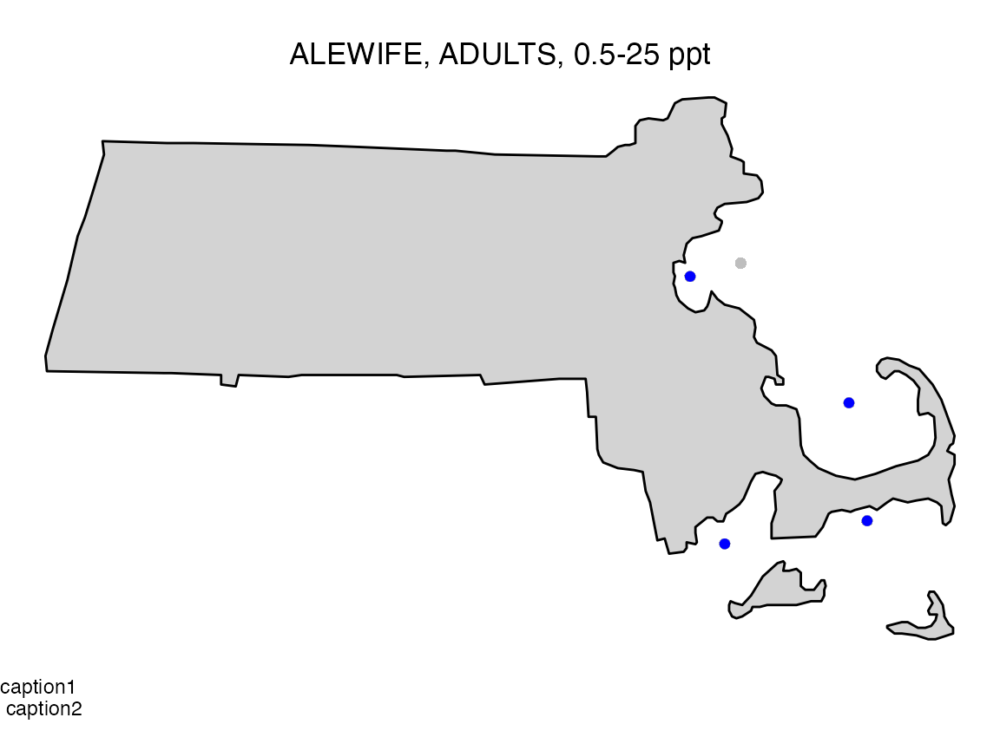

vignettes/vignette_MapTaxaObs.Rmd
vignette_MapTaxaObs.RmdMap taxonomic observations from a data frame. Input a dataframe with SampID , TaxaID, TaxaCount, Latitude, and Longitude. Other arguments are format (jpg vs. pdf), file name prefix, and output directory. Files are saved with the prefix “map.taxa.” by default.
Uses the maps package map function.
For maps package map function need database (usa, state, county) and regions (e.g., maryland). Additional map function arguments can be passed through the MapTaxaObs function.
Data used should have Sample Identifier, Taxa Identifier, Taxa Count (can be 1 for all), Latitude/Longitude (decimal degrees).
| estuary | CommonName | LifeStage | SalZone | Winter | Spring | Summer | Fall | All | TaxaName | State | Latitude | Longitude | Count | PctDensity |
|---|---|---|---|---|---|---|---|---|---|---|---|---|---|---|
| BOSTON HARBOR | ALEWIFE | ADULTS | 0.5-25 ppt | 0.0000000 | 2.333333 | 3.3333333 | 1.333333 | 1.7500000 | ALEWIFE, ADULTS, 0.5-25 ppt | MA | 42.335 | -70.9815 | 1.7500000 | 0.0023913 |
| BOSTON HARBOR | ALEWIFE | ADULTS | >25 ppt | 0.0000000 | 2.333333 | 3.3333333 | 2.666667 | 2.0833333 | ALEWIFE, ADULTS, >25 ppt | MA | 42.335 | -70.9815 | 2.0833333 | 0.0028467 |
| BOSTON HARBOR | AMERICAN EEL | ADULTS | 0.5-25 ppt | 0.0000000 | 0.000000 | 0.6666667 | 2.666667 | 0.8333333 | AMERICAN EEL, ADULTS, 0.5-25 ppt | MA | 42.335 | -70.9815 | 0.8333333 | 0.0011387 |
| BOSTON HARBOR | AMERICAN EEL | ADULTS | >25 ppt | 0.0000000 | 0.000000 | 0.6666667 | 2.666667 | 0.8333333 | AMERICAN EEL, ADULTS, >25 ppt | MA | 42.335 | -70.9815 | 0.8333333 | 0.0011387 |
| BOSTON HARBOR | AMERICAN LOBSTER | ADULTS | 0.5-25 ppt | 0.6666667 | 2.333333 | 4.0000000 | 3.333333 | 2.5833333 | AMERICAN LOBSTER, ADULTS, 0.5-25 ppt | MA | 42.335 | -70.9815 | 2.5833333 | 0.0035299 |
| BOSTON HARBOR | AMERICAN LOBSTER | ADULTS | >25 ppt | 2.3333333 | 3.000000 | 4.0000000 | 3.333333 | 3.1666667 | AMERICAN LOBSTER, ADULTS, >25 ppt | MA | 42.335 | -70.9815 | 3.1666667 | 0.0043270 |
The ggplot2 package can be used to create single maps
that are returned to the console for further editing.
# Packages
#library(BioMonTools)
#library(ggplot2)
#library(knitr)
#
df_obs <- BioMonTools::data_Taxa_MA
TaxaID <- "TaxaName"
TaxaCount <- "Count"
Lat <- "Latitude"
Long <- "Longitude"
myTaxa <- "ALEWIFE, ADULTS, 0.5-25 ppt"
df_map <- subset(df_obs, df_obs[, TaxaID] == myTaxa)
myDB <- "state"
myRegion <- "massachusetts"
Lat <- "Latitude"
Long <- "Longitude"
# Base Map
m1 <- ggplot2::ggplot(data=subset(ggplot2::map_data(myDB)
, region %in% c(myRegion))) +
ggplot2::geom_polygon(ggplot2::aes(x = long
, y = lat
, group = group)
, fill = "light gray",
color = "black") +
ggplot2::coord_fixed(1.3) +
ggplot2::theme_void()
# Add points (all)
m1 <- m1 + ggplot2::geom_point(data=df_obs
, ggplot2::aes(df_obs[, Long]
, df_obs[, Lat])
, fill=NA
, color="gray")
# Add points (Taxa)
m1 <- m1 + ggplot2::geom_point(data=df_map
, ggplot2::aes(df_map[,Long]
, df_map[,Lat])
, color="blue")
# Map Title (center)
m1 <- m1 +
ggplot2::labs(title = myTaxa) +
ggplot2::theme(plot.title = ggplot2::element_text(hjust = 0.5))
# Caption (left justified)
m1 <- m1 + ggplot2::labs(caption = "caption1 \n caption2") +
ggplot2::theme(plot.caption = ggplot2::element_text(hjust = 0))
# Show Results
knitr::kable(head(df_obs))| estuary | CommonName | LifeStage | SalZone | Winter | Spring | Summer | Fall | All | TaxaName | State | Latitude | Longitude | Count | PctDensity |
|---|---|---|---|---|---|---|---|---|---|---|---|---|---|---|
| BOSTON HARBOR | ALEWIFE | ADULTS | 0.5-25 ppt | 0.0000000 | 2.333333 | 3.3333333 | 1.333333 | 1.7500000 | ALEWIFE, ADULTS, 0.5-25 ppt | MA | 42.335 | -70.9815 | 1.7500000 | 0.0023913 |
| BOSTON HARBOR | ALEWIFE | ADULTS | >25 ppt | 0.0000000 | 2.333333 | 3.3333333 | 2.666667 | 2.0833333 | ALEWIFE, ADULTS, >25 ppt | MA | 42.335 | -70.9815 | 2.0833333 | 0.0028467 |
| BOSTON HARBOR | AMERICAN EEL | ADULTS | 0.5-25 ppt | 0.0000000 | 0.000000 | 0.6666667 | 2.666667 | 0.8333333 | AMERICAN EEL, ADULTS, 0.5-25 ppt | MA | 42.335 | -70.9815 | 0.8333333 | 0.0011387 |
| BOSTON HARBOR | AMERICAN EEL | ADULTS | >25 ppt | 0.0000000 | 0.000000 | 0.6666667 | 2.666667 | 0.8333333 | AMERICAN EEL, ADULTS, >25 ppt | MA | 42.335 | -70.9815 | 0.8333333 | 0.0011387 |
| BOSTON HARBOR | AMERICAN LOBSTER | ADULTS | 0.5-25 ppt | 0.6666667 | 2.333333 | 4.0000000 | 3.333333 | 2.5833333 | AMERICAN LOBSTER, ADULTS, 0.5-25 ppt | MA | 42.335 | -70.9815 | 2.5833333 | 0.0035299 |
| BOSTON HARBOR | AMERICAN LOBSTER | ADULTS | >25 ppt | 2.3333333 | 3.000000 | 4.0000000 | 3.333333 | 3.1666667 | AMERICAN LOBSTER, ADULTS, >25 ppt | MA | 42.335 | -70.9815 | 3.1666667 | 0.0043270 |
m1
The example below will create a PDF with one map per page.
df_obs <- data_Taxa_MA
SampID <- "estuary"
TaxaID <- "TaxaName"
TaxaCount <- "Count"
Lat <- "Latitude"
Long <- "Longitude"
output_dir <- tempdir()
output_prefix <- "maps.taxa."
output_type <- "pdf"
myDB <- "state"
myRegion <- "massachusetts"
myXlim <- c(-(73 + (30/60)), -(69 + (56/60)))
myYlim <- c((41 + (14/60)), (42 + (53/60)))
# Run function with extra arguments for map
BioMonTools::MapTaxaObs(df_obs,
SampID,
TaxaID,
TaxaCount,
Lat,
Long,
output_dir,
output_prefix,
output_type,
database = "state",
regions = "massachusetts",
xlim = myXlim,
ylim = myYlim)